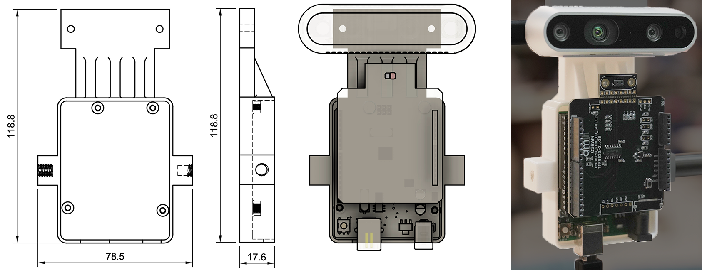
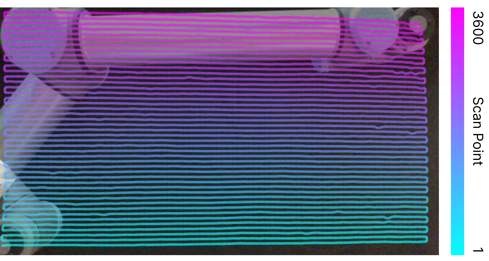
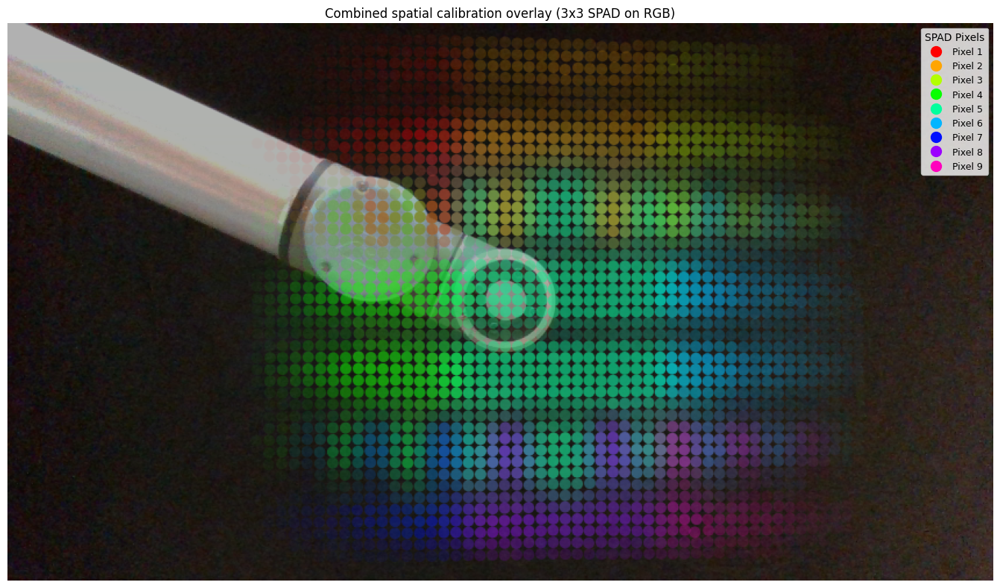

Spatial Calibration of Diffuse LiDARs

Abstract
Diffuse direct time-of-flight LiDARs report per-pixel depth histograms formed by aggregating photon returns over a wide instantaneous field of view, violating the single-ray assumption behind standard LiDAR-RGB calibration. We present a simple spatial calibration procedure that estimates, for each diffuse LiDAR pixel, its footprint (effective support region) and relative spatial sensitivity in a co-located RGB image plane. Using a scanned retroreflective patch with background subtraction, we recover per-pixel response maps that provide an explicit LiDAR-to-RGB correspondence for cross-modal alignment and fusion. We demonstrate the method on the ams OSRAM TMF8828.
Hardware and rigid mount
Pixel aggregation modes on the TMF8828. The sensor supports multiple spatial aggregation layouts; in each mode, reported pixels integrate photon returns over a wide instantaneous field of view under flood illumination. Our example calibration uses 3×3 Wide mode (P = 9).
{kind=link}

Custom rigid mount for co-located diffuse LiDAR (TMF8828) and RGB
(RealSense D435i). Left: CAD design with dimensions; right: the physical mount used
for our calibration captures. STLs are included in the repository's
assets/.
Calibration scan
{kind=link}

Retroreflective patch scan grid sampled with a UR10 robot arm. We traverse an 80×45 grid (K = 3600) in a snake pattern to reduce motion between points. At each grid location we record synchronized RGB frames and per-pixel LiDAR histograms; an identical patch-removed scan is captured for background subtraction.
Per-pixel spatial response
Per-pixel spatial response maps for the TMF8828 3×3 Wide mode overlaid on the co-located RGB image. Nonzero regions show each pixel's effective support in RGB coordinates, and the response magnitudes encode relative spatial sensitivity within that support.
{kind=link}

Calibration applied at inference. Per-pixel response maps from the
self-contained demo.ipynb notebook visualized over a sample RealSense
frame. The released capture_with_overlay.py tool runs the same
visualization live against a connected sensor.
Citation
@article{behari2026spatial,
title = {Spatial Calibration of Diffuse LiDARs},
author = {Behari, Nikhil and Raskar, Ramesh},
journal = {arXiv preprint arXiv:2603.06531},
year = {2026},
}